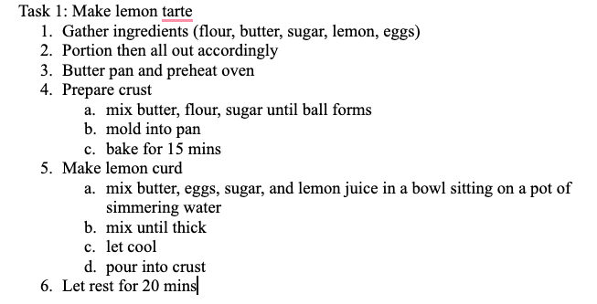
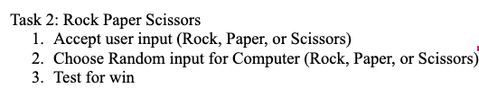
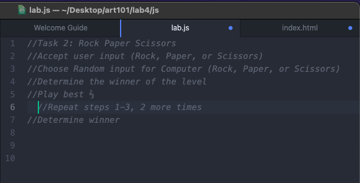

Compose two separate lists of highlevel tasks. One being mundane, while the other a task for the computer to execute.
It was challenging to think of a task for the computer to execute, yet doing some research on some simple games we found that rock, paper, scissors, would be interesting to run. It was equally challenging to find a mundane yet uncommon task. We initially thought of laundry and its many steps, yet we eventually transitioned to baking a lemon tarte which is far rarer than the very common task.
Task 1 list:

Task 2 list:

Task 3 js:
